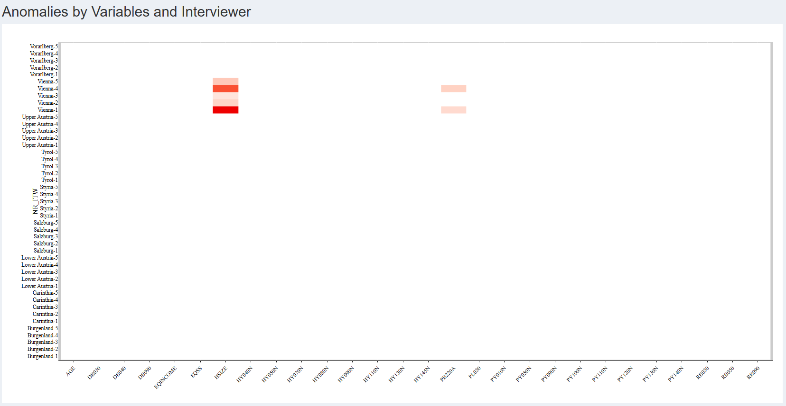
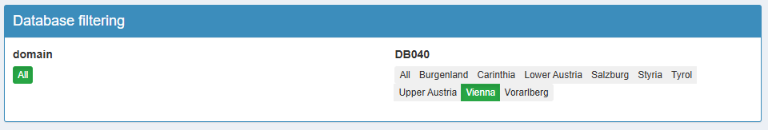

Guide pas à pas pour fouiller et détecter les anomalies
Source:vignettes/vizsurvey.Rmd
vizsurvey.RmdIntroduction
Pourquoi vizsurvey ?
Dans un processus statistique conforme au GSBPM, la qualité ne se joue pas uniquement en amont (échantillonnage, questionnaire, collecte) ni en aval (analyse, diffusion). Entre collecte et analyse, une phase clé consiste à contrôler et monitorer le matériau collecté pour repérer rapidement les anomalies, documenter les écarts et, si nécessaire, déclencher des actions correctrices.
{vizsurvey} répond à cette problématique : il offre une interface interactive pour parcourir vos données, comparer des profils de réponses et prioriser les investigations. L’objectif n’est pas de conclure statistiquement, mais de guider le regard de l’analyste avec des indicateurs simples (distances, rangs) et des visualisations adaptées.
Cohérence par enquêteur·rice
Le rôle des enquêteur·rices est central : compréhension fine du questionnaire, respect du routing, gestion de l’entretien. Il peut néanmoins apparaître des effets enquêteur (différences systématiques de distribution des réponses selon la personne qui interroge), dus à des méthodes de travail différentes, des biais involontaires, des erreurs récurrentes ou, plus rarement, à de la fraude.
Sur ce sujet, {vizsurvey} permet de :
Comparer les distributions de réponses d’un·e enquêteur·rice à tous les autres ;
Classer les personnes selon plusieurs indicateurs de distance ;
Focaliser l’examen sur les combinaisons enquêteur·rice × variable les plus atypiques.
Cohérence par domaine
D’une année à l’autre, les questionnaires évoluent (libellés, routing, filtres), mais les variables cibles doivent rester comparables. {vizsurvey} permet de définir une variable de domaine (ici par exemple l’année de l’enquête), permettant de mettre en évidence :
les écarts de distributions ou de niveaux (proportions, moyennes) ;
les variables présentant des ruptures qui méritent une relecture (mise en œuvre du routing, recodage, version du questionnaire, changement de collecte, etc.).
Base de données d’exemples
Afin d’illustrer les fonctionnalités du package {vizsurvey}, nous proposons des fichiers d’enquête issue de deux grandes enquêtes européenne : ESS (European Social Survey) et SILC (Survey on Income and Living Conditions).
L’ESS est une enquête européenne menée tous les deux ans depuis 2002. Elle vise à comprendre les attitudes, les valeurs et les comportements des habitants des pays européens. Les questions portent sur des thèmes variés : la politique, la confiance dans les institutions, le bien-être, la religion, le travail, la santé, etc. L’ESS est une enquête en face à face avec un protocole commun à travers les pays participants pour garantir la comparabilité internationale. Les données sont rendues publiques et servent à la recherche en sciences sociales. Nous fournissons deux vagues d’enquêtes : ESS9 et ESS10.
L’EU-SILC est une enquête annuelle coordonnée par Eurostat. Elle sert à mesurer les revenus, la pauvreté, les inégalités et les conditions de vie dans les pays européens. SILC permet notamment de calculer des indicateurs clés comme le taux de pauvreté le celui de privation matérielle et sociale. C’est une enquête auprès des ménages, menée par les instituts nationaux de statistique (comme Statbel en Belgique). Eurostat fournit publiquement des Public Use Files, des fichiers utilisables publiquement pour des tests. Les fichiers sont anonymisés et ne reproduisent pas nécessairement les résultats officiels. Nous fournissons deux fichiers : P-FILE (fichier des individus) et H-FILE (fichier des ménages). Il n’y a pas de numéro d’enquêteur indiqué dans ces fichiers initialement, donc un numéro fictif a été créé pour les exemples ici.
Lancement de vizsurvey
Il y a trois manières de lancer {vizsurvey} : à partir d’une base de
données en R (runVizsurvey_from_r), à partir d’un fichier
csv (runVizsurvey_from_file), ou en préparant une structure
de fichier pour analyser en simultané plusieurs enquêtes
(runVizsurvey_from_folder).
À partir d’un objet R
Pour lancer l’interface à partir d’un objet R, il suffit d’appeler la
fonction runVizsurvey_from_r avec le nom de l’objet.
knitr::opts_chunk$set(warning = FALSE, message = FALSE)
library(vizsurvey)
# Not Work
runVizsurvey_from_r(df)Si vous avez lancé les packages nécessaires, une interface {shiny} se lance dans votre navigateur. Cette interface est pratiquement vide, car vous n’avez renseigné aucun argument, comme une variable identifiant les enquêteur·rices, ou une pour identifier les domaines ou les sous groupes de ventilation. Voici la commande pour intégrer ces paramètres.
# Not Work
runVizsurvey_from_r(df,
var_itw = "NR_ITW",
var_domain = "ID_DOMAIN",
var_group = "ID_GROUP")À partir d’une base de données brute
{vizsurvey} peut aussi être utilisé à partir d’un fichier brut, en
csv, ou tout autre format lisible par la fonction fread du
package {data.table}. La commande est similaire à celle pour un objet R
:
# Not Work
runVizsurvey_from_file(path,
var_itw = "NR_ITW",
var_domain = "ID_DOMAIN",
var_group = "ID_GROUP")À partir d’un répertoire de bases de données
Le package {vizsurvey} peut gérer plusieurs répertoires contenant différentes enquêtes. Dans ce type de configuration, on part du principe que plusieurs utilisateur·rices exploitent {vizsurvey} à différents moments. Or, la génération des statistiques à chaque lancement de l’application peut s’avérer trop longue. Il est donc préférable de préparer les fichiers en amont, afin de rendre l’ouverture de l’interface plus fluide.
Cette vignette se concentre uniquement sur la visualisation des données à l’aide de {vizsurvey}. La procédure de préparation et de création des fichiers est détaillée dans une autre vignette dédiée.
Chaque enquête (et donc chaque dossier de base de données) doit contenir un fichier global de configuration au format .rds. Pour lancer l’interface, il suffit ensuite d’indiquer le répertoire source des données, et le nombre de sous répertoires présents (1 si le répertoire contient une enquête, 2 si plusieurs répertoires sont présents, 3 si plusieurs répertoires contiennent eux mêmes plusieurs répertoires d’enquête). Voici par exemple la commande pour une structure comportant deux répertoires ESS et SILC, avec leurs sous-répertoires d’enquêtes : ESS9, ESS10 pour ESS ; HFILE et PFILE pour SILC.
runVizsurvey_from_folder("inst/extdata",depth_folder = 3)Analyse de la cohérence par enquêteur·rice
L’analyse de la cohérence par enquêteur vise à évaluer la qualité et la régularité des données collectées selon la personne ayant mené les entretiens. Dans une enquête, chaque enquêteur·rice constitue une source potentielle de variabilité non due à l’échantillonnage mais à des effets d’enquête : différences d’interprétation du questionnaire, stratégies de réponse, ou biais de saisie.
Cette étape permet donc d’identifier d’éventuelles anomalies de collecte (valeurs atypiques, proportions incohérentes, taux anormal de données manquantes), mais aussi de détecter des profils de collecte homogènes suggérant une bonne application du protocole.
L’objectif n’est pas de sanctionner, mais de documenter la fiabilité du processus de terrain, d’orienter les actions de formation et de calibrage, et d’améliorer la qualité globale des enquêtes futures.
L’analyse repose sur une comparaison systématique entre les enquêteur·rices pour un ensemble d’indicateurs clés (valeurs manquantes, distributions des réponses).
Données d’exemples
Le package {laeken} fournit un fichier d’exemple de l’enquête SILC.
Nous pouvons prendre ce fichier comme exemple, et venir créer un faux
numéro d’enquêteur·rice à partir de la variable de province
DB040. Nous exécutons la fonction
runVizsurvey_from_r avec comme argument supplémentaire
var_group = "DB040" afin de prévoir des subdivisions de
l’analyse par province.
knitr::opts_chunk$set(warning = FALSE, message = FALSE)
data(eusilc)
set.seed(123)
eusilc$NR_ITW <- paste(eusilc$db040,sample(1:5,nrow(eusilc),replace = T),sep="-")
runVizsurvey_from_r(eusilc,var_itw = "NR_ITW",var_group = "db040")Le premier onglet de {vizsurvey} permet de naviguer de manière interactive à travers les situations détectées comme anormales concernant les enquêteur·rices.

Analyse de la carte de chaleur
Chaque ligne est un ou une enquêtrice. Ici, nous reconnaissons les provinces autrichiennes avec un index, issu de notre création d’un numéro d’enquêteur·rice. Chaque colonne est une variable, catégorielle ou continue. Chaque cellule est colorée si les réponses de l’enquêteur·rice pour cette variable est suffisamment différente des réponses du reste de la base de données.
Pour les variables catégorielles, il peut s’agir d’un écart trop important sur le pourcentage de données manquantes, ou d’un trop élevé (donc d’une distribution très éloignée du reste de la base de données). Pour les variables numériques, il peut s’agir d’un écart trop important sur le pourcentage de données manquantes ou sur la médiane. Dans les deux cas, ces écarts sont normalisés par variable avant affichage, et la cellule s’affiche si l’écart dépasse cinq écarts-types pour cette variable. Le détail méthodologique sur les calculs effectués se trouve dans une vignette dédiée.
En survolant les cellules, toutes les informations sont affichées, de sorte à comprendre la source de la coloration. Voici une première manière d’analyser la carte de chaleur :
Une cellule isolée rouge n’est pas problématique en soi : avec beaucoup de croisements, il est normal d’observer quelques extrêmes.
Une ligne régulièrement rouge (sur plusieurs variables) évoque un comportement récurrent (erreur de procédure, incompréhension, routage mal appliqué, voire fraude).
Une colonne rouge (sur plusieurs enquêteur·rices) pointe une variable fragile (libellé ambigu, routing, effet d’une zone).
Par défaut, la carte de chaleur affiche une cellule en rouge lorsque l’un des écarts dépasse 5 écart-type de la variable. Dans notre situation, cela conduit à afficher 7 cellules, toutes pour Vienne. En réduisant le seuil de sensibilité dans les paramètres, on affiche bien plus de cellules. Il n’y a pas de seuil prédéterminée, ou statistiquement valide, pour une telle analyse. Cela doit être déterminé par tâtonnement par l’équipe en charge de la coordination de l’enquête. Il est également possible de modifier le nombre de lignes minimum (donc d’enquêtes) pour afficher la ligne, ou le nombre de valeurs non manquantes nécessaires pour l’affichage d’une cellule.
 Enfin, il est possible
de zoomer dans la carte de chaleur, sur les lignes, les colonnes, ou sur
les cellules à risque. Cela permet, lorsque la carte de chaleur est trop
vaste, de cibler plus efficacement les situations à analyser. Voici par
exemple la même carte de chaleur pour une sensibilité de deux écart-type
avec un zoom sur les cellules à risque. On voit que d’autres cellules
apparaissent suite à la hausse de sensibilité, mais que certaines
provinces ont disparu, car n’affichant aucune cellule rouge.
Enfin, il est possible
de zoomer dans la carte de chaleur, sur les lignes, les colonnes, ou sur
les cellules à risque. Cela permet, lorsque la carte de chaleur est trop
vaste, de cibler plus efficacement les situations à analyser. Voici par
exemple la même carte de chaleur pour une sensibilité de deux écart-type
avec un zoom sur les cellules à risque. On voit que d’autres cellules
apparaissent suite à la hausse de sensibilité, mais que certaines
provinces ont disparu, car n’affichant aucune cellule rouge.

Analyse d’une variable catégorielle
Dans notre exemple, avec une sensibilité de 5 écart-type, sept
cellules s’allument en rouge pour la région de Vienne. En cliquant sur
le croisement Vienne-1 / HHSIZE, on peut afficher la distribution de
cette variable HHSIZE pour l’enquêteur Vienne-1, et la comparer avec la
distribution de cette variable pour les autres. Un résumé statistique de
la variable est disponible en dessous à l’aide du package
summarytools.
On découvre ainsi que les modalités 3 et 4 de la variable HHSIZE sont bien moins présentes chez l’enquêteur Vienne-1 que chez les autres.
 Pour essayer de
comprendre ces différences, nous avons inclus un algorithme qui calcule
les dix corrélations les plus hautes dans la base de données, pour
ensuite projeter les corrélations effectives pour l’enquêteur·rice et
celles du reste de la base de données. Il s’agit uniquement de
corrélations de pearson en transformant au préalable les variables
catégorielles en facteur.
Pour essayer de
comprendre ces différences, nous avons inclus un algorithme qui calcule
les dix corrélations les plus hautes dans la base de données, pour
ensuite projeter les corrélations effectives pour l’enquêteur·rice et
celles du reste de la base de données. Il s’agit uniquement de
corrélations de pearson en transformant au préalable les variables
catégorielles en facteur.
Principe directeur : aucun test statistique n’est effectué. {vizsurvey} calcule des distances, des scores, des rangs et des corrélations destinés à prioriser la revue. Les conclusions analytiques restent du ressort de l’équipe méthodologique.
Pour notre enquêteur Vienne-1 et son résultat surprenant pour la variable HHSIZE, on observe que les corrélations de cette variable sont identiques chez lui et pour le reste de la base de données. Cela semble écarter l’hypothèse d’une anomalie spécifique à cette variable.

Pour revenir sur la carte de chaleur, on remarque que les cinq cellules de Vienne sont allumées en rouge pour la variable HHSIZE, preuve d’un effet de zone plutôt qu’un effet d’enquêteur·rice. Pour s’en convaincre, on peut sélectionner DB040 = Vienne en haut de l’interface. Dès lors, la carte de chaleur se limite aux données de Vienne, et n’affiche que les écarts des enquêteur·rices par rapport à cette province. Et ainsi, il n’y a plus aucune cellule s’affichant en rouge.

Analyse d’une variable continue
Lorsqu’on clique sur une variable continue, la fonction de densité s’affiche alors, toujours avec le point de comparaison entre l’enquêteur·rice, et le reste de la base de données. Dans notre cas Voici un exemple pour la variable d’âge pour l’enquêtrice Carinthia-5 :

Synthèse des anomalies
Quand le volume de croisements est important, il est difficile de savoir où commencer sur la carte de chaleur. {vizsurvey} propose un classement des enquêteur·rices avec un modèle Isolation Forest appliqué aux vecteurs de χ² pour les variables catégorielles et de médianes pour les variables continues.
La méthode Isolation Forest est une technique d’apprentissage automatique non supervisée utilisée pour établir un classement de rareté des observations. Elle repose sur une idée simple : les observations inhabituelles sont plus faciles à isoler que les observations “normales”. Concrètement, l’algorithme construit de nombreux arbres de décision aléatoires : à chaque nœud, une variable et une valeur de coupure sont choisies au hasard pour diviser l’échantillon. Une observation est isolée lorsqu’elle se retrouve seule dans une branche. Les observations anormales nécessitent donc moins de divisions pour être isolées. Le score d’isolation obtenu peut ensuite être utilisé pour établir un rang.
Important : ce classement n’est pas une preuve. Il priorise l’audit (lecture ciblée des variables responsables, vérification du contexte terrain).
Voici le classement des enquêteur·rices issue de la carte de chaleur. On retrouve enquêteur·rices de province de Vienne, mais aussi d’autres de la province de la basse et la haute Autriche. Pour ces deux derniers cas, il n’y a pas d’écarts au dessus du seuil de sensibilité, mais l’isolation se fait rapidement.

En cliquant sur un·e enquêteur·rice, on obtient un deuxième tableau à droite avec la liste des variables. Voici l’illustration en cliquant sur l’enquêtrice Vienna-4. Cela permet d’orienter l’analyse en commençant par les variables les plus marquantes. En cliquant sur une variable, on obtient en dessous les graphiques d’analyse comme durant la carte de chaleur.

Résumé : analyse pas à pas
- Sélectionner l’enquête et la période.
- Choisir l’onglet Enquêteurs.
- Filtrer la base de données selon une zone en particulier, et ajuster les paramètres d’affichage.
- Parcourir la heatmap pour repérer les zones les plus rouges.
- Cliquer sur une cellule pour ouvrir les détails (distribution, corrélation).
- Comparer à la référence et regarder la cohérence intra-variable (modalités) et inter-variables (corrélations).
- Consigner les cas récurrents (mêmes écarts sur plusieurs variables ou dans le temps).
Analyse de la cohérence par domaine
L’analyse de la cohérence par domaine vise à vérifier la stabilité des indicateurs clés dans le temps et à détecter d’éventuelles ruptures liées à des changements de collecte, de pondération ou de comportement des unités répondantes. Toutes les variables sont examinées d’un domaine à un autre (souvent d’une année sur l’autre) afin d’identifier les variations anormalement fortes qui ne s’expliqueraient pas par l’évolution réelle du phénomène observé. Cette approche permet de distinguer les fluctuations statistiques attendues (échantillonnage, conjoncture, etc.) des sauts incohérents suggérant une erreur de codage ou de définition. L’objectif est de garantir la continuité temporelle des séries.
Données d’exemples
Nous pouvons repartir du fichier eusilc du package
{laeken}, et venir créer un faux domaine d’analyse. Nous allons créer
une variable d’année aléatoire entre 2010 et 2020, et provoquer quelques
erreurs à détecter pour l’année 2020 : la variable pb220a
sera manquante, la modalité 4 de la variable hsize
n’existera pas, et la variable de revenu équivalent moyen
eqIncome sera à la mauvaise échelle.
data(eusilc)
# Générer la variable d'année
set.seed(123)
eusilc$YEAR <- sample(2010:2020,nrow(eusilc),replace=T)
# Générer les erreurs
eusilc[eusilc$YEAR == 2020,"pb220a"] <- NA
eusilc[eusilc$YEAR == 2020 & eusilc$hsize == 4,"hsize"] <- NA
eusilc[eusilc$YEAR == 2020,"eqIncome"] <- eusilc[eusilc$YEAR == 2020,"eqIncome"] / 100
runVizsurvey_from_r(eusilc,var_domain = "YEAR",var_group = "db040")Le deuxième onglet de {vizsurvey} permet de naviguer de manière interactive à travers les situations détectées comme anormales concernant les domaines.
Analyse des changements sur les variables
Le tableau de droite indique les variables ayant apparu ou disparu
entre les domaines. On retrouve ici la variable pb220a que
nous avons supprimé pour l’année 2020.

Le tableau de gauche indique les variables ayant connu une variation notable. Chaque ligne est une variable ayant connu un changement entre deux modalités du domaine. Par défaut, le domaine de référence est la dernière modalité de la variable (ici 2020 pour l’année), et la comparaison se fait avec l’avant dernière modalité (ici 2019). Vous pouvez changer de modalité de référence, ou ajouter des modalités de comparaison. Attention, la lecture du tableau est peu lisible au delà de deux modalités de comparaison. Les cellules sont colorées lorsque l’écart est suffisamment élevé.

Pour les variables catégorielles, il peut s’agir d’un écart trop
important sur le pourcentage de données manquantes ou sur le nombre de
modalités. Ici, on retrouve la variable HSIZE qui voit une
hausse de données manquantes. Pour les variables continues, il peut
s’agir d’un écart trop important sur le pourcentage de données
manquantes, la moyenne ou sur la médiane. Ici, on retrouve la variable
EQINCOME avec l’erreur de milliers.
Ce seuil de sensibilité peut être modifié, affichant plus ou moins de variables. Il est également possible de faire varier du nombre de valeurs non manquantes nécessaire pour inclure la variable dans l’analyse.
Analyse graphique
Pour chaque variable détectée dans cet onglet, des graphiques sont accessibles dans l’onglet Graphics pour mieux comprendre les écarts entre domaine. Le graphique de gauche illustre la distribution de la variable pour le domaine de référence. Le graphique de droite illustre la comparaison entre les domaines sélectionnés.
Voici l’exemple pour la variable catégorielle HSIZE On
détecte automatiquement la part de données manquantes importante en
2020.

Voici l’exemple pour la variable continue EQINCOME On
détecte automatiquement la différence d’échelle des deux
distributions.

Résumé : analyse pas à pas
- Sélectionner l’enquête et la période.
- Choisir l’onglet Domain.
- Filtrer la base de données selon une zone en particulier, et ajuster les paramètres d’affichage.
- Lister les variables ayant apparu et disparu et vérifier si cela est justifiable.
- Parcourir les variables ayant changé, pour vérifier chaque écart en rouge.
- Analyser ces variables à l’aide des graphiques.
- Consigner les cas problématiques (nouvelle modalité, distribution très différente, etc.).
Conclusion
L’analyse de la cohérence par enquêteur·rice constitue une étape essentielle du contrôle qualité d’une enquête, mais elle ne vise pas à produire des jugements automatiques. L’outil {vizsurvey} n’infère rien : il organise l’exploration et met en évidence les régularités, écarts ou incohérences susceptibles d’attirer l’attention du service de coordination du terrain. L’interprétation des résultats doit toujours s’appuyer sur le contexte opérationnel : les consignes données aux enquêteur·rices, les conditions de collecte, etc. Ces éléments seuls permettent de distinguer une vraie anomalie d’un simple effet de structure ou de calendrier.
De plus, les informations mobilisées concernent parfois des données sensibles, tant sur les enquêteur·rices que sur les ménages interrogés ; elles doivent donc être traitées dans le strict respect des règles de confidentialité et de protection des données personnelles en vigueur.
En résumé, {vizsurvey} est un outil d’aide à l’analyse, pas un outil de diagnostic automatique. Il permet de rendre visibles les comportements de collecte et d’outiller les équipes d’enquête, mais les conclusions finales relèvent toujours du jugement éclairé de ces équipes.